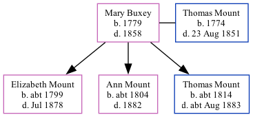

Mary Elizabeth Mount (née Buxey) 1779 - 1858
[ Home ] | [ Calendar ] | [ Surnames Index ] | [ Family History ]Mary Buxey, the 4 times great-grandmother of Nigel Horne, was born in Herne Bay, Kent, England in 17791,2 and married Thomas Mount (an agricultural laborer with whom she had 3 children: Elizabeth, Ann and Thomas) in Herne, Kent, England on Nov 4, 17975 (archiver.rootsweb.com KFHS CD21).
Throughout her life, she lived in Herne in 17976, in 18411 and in 18512.
She died in 1858 in Kent3,4 (jun/Jul) and was buried in Herne on Jul 5, 18584.
Children
- Elizabeth was born c. 1799
- Ann was born c. 1804
- Thomas was born c. 1814
Citations
- 1841 England Census Online publication - Provo, UT, USA: The Generations Network, Inc., 2006.Original data - Census Returns of England and Wales, 1841. Kew, Surrey, England: The National Archives of the UK (TNA): Public Record Office (PRO), 1841. Data imaged from the National
- 1851 England Census Online publication - Provo, UT, USA: The Generations Network, Inc., 2005.Original data - Census Returns of England and Wales, 1851. Kew, Surrey, England: The National Archives of the UK (TNA): Public Record Office (PRO), 1851. Data imaged from the National
- England & Wales, FreeBMD Death Index: 1837-1915 Online publication - Provo, UT, USA: The Generations Network, Inc., 2006.Original data - General Register Office. England and Wales Civil Registration Indexes. London, England: General Register Office. © Crown copyright. Published by permission of the Cont
- England, Select Deaths and Burials, 1538-1991 Ancestry.com Operations, Inc.
- England, Select Marriages, 1538–1973 Ancestry.com Operations, Inc.
- England, Select Marriages, 1538–1973 Ancestry.com Operations, Inc.
Family Tree
Generated by ged2site. Last updated on Nov 13, 2024